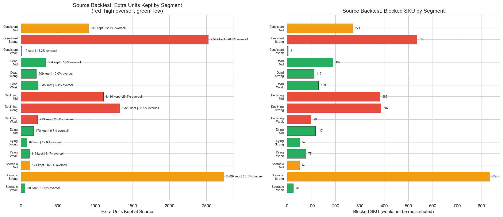
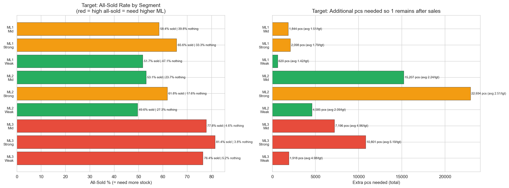

Backtest: Dopad navrhovanych pravidiel
CalculationId=233 | Datum: 2025-07-13 | Generovano: 2026-03-22 03:46
Tento report ukazuje ocekavany dopad pravidel z
Report 2: Decision Tree na redistribucni objemy a oversell.
1. Source Backtest
Pro kazdy segment (Pattern x Store) ukazujeme:
- Current Qty = celkove redistribuovane mnozstvi v aktualni kalkulaci
- Extra Kept = kolik vice kusu by zustalo na source (kvuli zvysenemu MinLayer)
- Blocked SKU = kolik SKU by se vubec neredistribuovalo (ML vyssi nez dostupna zasoba)
- Blocked Qty = mnozstvi, ktere by se neredistribuovalo
- Oversell % = soucasna mira oversell v segmentu

| Pattern | Store | SKU | Current Qty | Extra Kept | Blocked SKU | Blocked Qty | Oversell % |
|---|
| Consistent | Mid | 1,164 | 1,877 |
912 | 271 | 271 |
22.7% |
| Consistent | Strong | 1,693 | 2,898 |
2,522 | 535 | 579 |
28.0% |
| Consistent | Weak | 431 | 641 |
12 | 5 | 5 |
13.2% |
| Dead | Mid | 6,967 | 8,633 |
334 | 189 | 189 |
7.8% |
| Dead | Strong | 4,061 | 5,143 |
209 | 112 | 112 |
10.0% |
| Dead | Weak | 4,597 | 5,461 |
235 | 129 | 129 |
5.1% |
| Declining | Mid | 569 | 781 |
1,110 | 383 | 427 |
28.3% |
| Declining | Strong | 751 | 1,121 |
1,329 | 387 | 423 |
35.4% |
| Declining | Weak | 219 | 294 |
223 | 99 | 100 |
25.1% |
| Dying | Mid | 2,882 | 3,505 |
170 | 117 | 117 |
9.7% |
| Dying | Strong | 1,951 | 2,373 |
82 | 52 | 52 |
12.6% |
| Dying | Weak | 1,594 | 1,933 |
113 | 77 | 77 |
8.1% |
| Sporadic | Mid | 4,176 | 5,783 |
121 | 52 | 52 |
15.3% |
| Sporadic | Strong | 3,712 | 5,705 |
2,729 | 835 | 837 |
20.1% |
| Sporadic | Weak | 2,003 | 2,606 |
59 | 26 | 26 |
10.9% |
| CELKEM | 36,770 | 48,754 |
10,160 | 3,269 | 3,396 |
- |
Interpretace:
- 3,269 SKU by se neredistribuovalo (blokovano vyssi ML).
- 3,396 ks by se neodvezlo z techto blokovanych SKU.
- 10,160 ks by navic zustalo na source prodejnach (mene odvezeno i u redistributed SKU).
- Vetsina blokovanych SKU je z Declining/Strong (387) a Sporadic/Strong (835) - presne segmenty s nejvyssim oversell.
Cileny dopad: Z celkovych 3,269 blokovanych SKU maji segmenty s >20% oversell celkem
2,510 blokovanych SKU.
To znamena, ze vetsina blokovani miri presne na problematicke segmenty.
2. Target Backtest
Pro kazdy target segment (ML x Store) ukazujeme:
- All-sold % = kolik targetu prodalo vsechny redistribuovane kusy (= uspech, ale priste posleme vice)
- Nothing-sold % = kolik targetu neprodalo nic (= problem)
- Extra needed (pcs) = kolik vice kusu bychom meli poslat, aby po prodejich zustal alespon 1 kus
- Avg extra/target = prumerna potreba na 1 target SKU

| MinLayer | Store | SKU | All-sold % | Nothing % | Extra needed (pcs) | Avg extra/target |
|---|
| ML1 | Mid | 2,095 |
58.4% | 39.8% |
1,844 | 1.51 |
| ML1 | Strong | 1,788 |
65.6% | 33.3% |
2,098 | 1.79 |
| ML1 | Weak | 847 |
51.7% | 47.1% |
620 | 1.42 |
| ML2 | Mid | 12,793 |
53.1% | 23.7% |
15,207 | 2.24 |
| ML2 | Strong | 14,766 |
61.8% | 17.6% |
22,934 | 2.51 |
| ML2 | Weak | 4,418 |
49.6% | 27.3% |
4,585 | 2.09 |
| ML3 | Mid | 1,866 |
77.8% | 4.6% |
7,196 | 4.96 |
| ML3 | Strong | 2,554 |
81.4% | 3.8% |
10,801 | 5.19 |
| ML3 | Weak | 504 |
76.4% | 5.2% |
1,918 | 4.98 |
| CELKEM | 41,631 |
- | - | 67,203 | - |
Co znamena "extra needed": Pokud je target all-sold, znamena to, ze jsme poslali PRILIS MALO kusu.
"Extra needed" ukazuje, kolik vice kusu bychom meli poslat, aby po vsech prodejich zustal alespon 1 kus.
Napr. ML3 Strong: 81.4% all-sold, prumerny target potrebuje 5.19 kusu navic. Pokud zvysime target MinLayer z 3 na 4-5,
posime vice kusu a je pravdepodobnejsi, ze alespon 1 kus zustane.
Celkem 67,203 ks navic by melo proudit do systemu s navrzenymi target ML zvysenimi.
To je vyrazne navyseni objemu, ale vetsina smeruje do silnych prodejen (Strong), kde je vysoka pravdepodobnost prodeje.
3. Celkovy dopad

3.1 Source strana
| Metrika | Hodnota | Vyznam |
|---|
| Blokovane SKU | 3,269 | SKU, ktere by se vubec neredistribuovaly |
| Blokovane ks | 3,396 | Kusy, ktere by zustaly na source |
| Extra kept ks | 10,160 | Vice kusu zustane na source i u redistributed SKU |
| Snizeni oversell | Cilene na segmenty >20% | Vetsina blokovani v Declining, Consistent/Strong |
3.2 Target strana
| Metrika | Hodnota | Vyznam |
|---|
| Extra needed ks | 67,203 | Vice kusu posime do targetu s vysokym all-sold |
| Hlavni beneficienti | Strong stores | ML2/ML3 Strong prodejny dostanou vice kusu |
| Ocekavany efekt | Vice "1 zustane" | Vyssi ML = mensi sance ze se vse proda |
3.3 Celkova zmena objemu
Source: -13,556 ks (mene odeslano ze source)
Target: +67,203 ks (vice prijato na target)
Net: +53,647 ks zmena v redistribucnim objemu
Vysvetleni: Na source strane drzime vice kusu (vyssi MinLayer = mene odvezeme). Na target strane posisme vice kusu
(vyssi MinLayer = posisme vice, aby 1 zustal). Celkovy efekt zavisna na pomeru obou stran.
Klicovy zaver:
- Source pravidla cilene blokuji redistribuci z problematickych segmentu (Declining, Consistent/Strong)
- Target pravidla navysuji objem pro silne prodejny, kde se zbozi prodava
- Celkovy efekt: mensi oversell na source strane, lepsi zasobeni na target strane
- Pravidla jsou konzervativni - Dead a Dying segmenty (22,000+ SKU) zustavaji na ML=1
Generovano: 2026-03-22 03:46 | CalculationId=233 | EntityListId=3 |
Viz Report 1: Findings pro kompletni analytiku,
Report 2: Decision Tree pro pravidla.